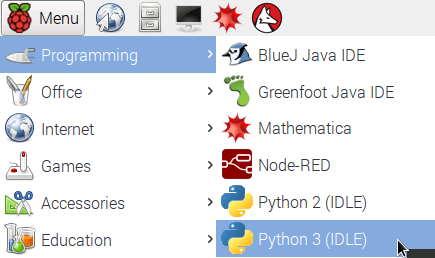

What You Will Need
Python is a powerful programming language that can be used to create command-line programs, windowed programs, web apps, games and mobile apps.
If it isn’t already obvious you will need a computer to do your Python programming. A tablet or phone will not cut the mustard. The Raspberry Pi comes with Python already, but on your computer at home, the quickest way to get started is by downloading and installing the Anaconda package from https://www.continuum.io/downloads
Open IDLE
To start you should use the IDLE editor for Python 3.
-
Open the Python 3 (IDLE) from the main menu:

-
The Python Shell will be displayed.
It is possible to enter commands directly into the Python Shell as we will do now but it is more common to save commands into a file and then run the file.
- At the python shell prompt >>> type:
x = 44
- Pressing the Return key on the keyboard.
- Then type the following:
print(x)
- And press the Return key again.
-
You have successfully programmed the computer. You told the computer that 'x' represents the number 44 and then you commanded the computer to print whatever 'x' represents.
- Next type x * 10 and then press Return:
- You have multiplied 44 by 10. Other calculations can be made using the symbols: + - * /
-
Another calculation we can perform is 'modulus' - This gives the remainder in a calculation. Try the following code:
x % 10
You should get answer of 4 - since 4 is the remainder when 44 is divided by 10.
Creating Python Files
-
Next we will save our Python commands in a file and run that file using Python.
- From the menu choose File » New File
- A new window opens and into this window type the following Python code:
print("Hello World") - Choose File > Save As.. and name your file hello.py
- Now it is time to run your code. From the menu choose Run » Run Module - as shown below
- If you look at the Python Shell window you should see the output from your hello.py program.
You've now written and run your first Python program. Let's make it a little more interesting ...
Getting User Input
Next we will ask the user their name and print their name on the screen.
- In your hello.py file amend the current text to the following:
name_of_user = input("What is your name ?") print("Hello ", name_of_user) - Run your code by choosing Run » Run Module from the menu.
- You should be prompted to type your name and when you press the Enter key on the keyboard the program should say hello to you.
Repeating Ourselves
Computers are very good at repeating tasks that humans would find boring. Let's look at an example of using a for loop:
- Change the code of the hello.py file to read:
name_of_user = input("What is your name ?") for counter in range(20): print("Hello", name_of_user) - Run your code by choosing Run > Run Module from the menu.
- In your code try changing the number 20 to something higher and run the code again.
- How about asking the user how many times they want to print the phrase. Amend your code to the following:
- Run your code by choosing Run » Run Module from the menu.
- Create a new file using File » New ...
- Save the file as leapyear.py
- Type the following into your file:
- Save the file
- Run your code by choosing Run » Run Module from the menu.
- Create a new file using File » New ...
- Save the file as leapyear_gui.py
- Save the file
- Run your code by choosing Run » Run Module from the menu.
name_of_user = input("What is your name ?")
number_of_times = input("How many times ?")
for counter in range(number_of_times):
print("Hello", name_of_user)
Conditionals with If
We can tell a program to perform different actions based on conditions. We will create a new program that will allow the user to choose a year and the program will respond by informing the user whether that year was a leap year or not.
user_year = int(input("Choose a year ? "))
if user_year % 4 == 0:
print(str(user_year) + " is a leap year")
else:
print(str(user_year) + " is a NOT leap year")
As you run your program notice that the behaviour of the program changes depending on the IF statement. When the remainder of the sum is equal to (==) zero (i.e. there is no remainder) THEN a successful message is printed ELSE an unsuccessful message is printed.
Creating a GUI (Graphical User Interface)
Could we create our leap year program with a windowed layout and buttons rather than having the user typing commands into a terminal .
from tkinter import *
def is_leap_year(year_to_check):
if year_to_check % 4 == 0:
label_answer['text'] = str(year_to_check) + ' is a leap year'
else:
label_answer['text'] = str(year_to_check) + ' is NOT a leap year'
def printResult():
year_submitted=int(entry_year.get())
is_leap_year(year_submitted)
root = Tk()
root.title("Leap Year Checker")
label_year = Label(root, text="Which year would you like to check : ")
label_answer = Label(root, text="")
entry_year = Entry(root)
btn = Button(root, text="Check It!", fg="red", command=printResult)
label_year.grid(row=0,column=0)
entry_year.grid(row=1,column=0, sticky=E)
btn.grid(row=2,column=0, sticky=E)
label_answer.grid(row=3,columnspan=2)
root.mainloop()